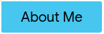

| |
|
|
 |
|---|
This page contains programs that were created using javascripts and can be embedded in websites. The first is a picture of me in "bitmoji" form using javascript to create it. I then further used this same bitmoji to make it "dance" and to race it against a frog and a bunny. This was all created using Khan Academy.
Made using: Khan Academy Computer Science